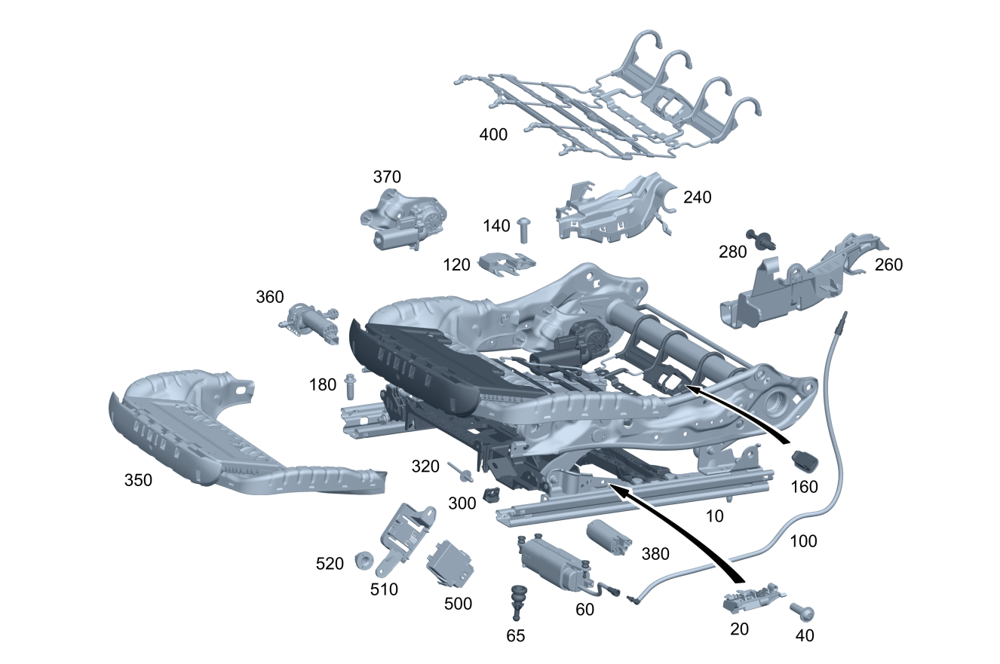

| № | Артикул | Название | Кол. | Примечание | Ограничение |
|---|---|---|---|---|---|
| 10 | A 206 910 59 06 | Регулировка пол.сиденья | 1 | Сиденье слева [402] БОЛЬШЕ НЕ ПОСТАВЛЯЕТСЯ | 555+241+409 |
| 10 | A 206 910 59 06 | Регулировка пол.сиденья | 1 | Сиденье слева [402] БОЛЬШЕ НЕ ПОСТАВЛЯЕТСЯ | 555+275+409 |
| 10 | A 000 910 57 11 | Регулировка сид. по выс. (SEAT HEIGHT ADJUSTMENT) | 1 | Сиденье слева | |
| 10 | A 000 910 69 11 | Регулировка сид. по выс. (SEAT HEIGHT ADJUSTMENT) | 1 | Сиденье слева | P65 |
| 10 | A 000 910 77 11 | Регулировка сид. по выс. (SEAT HEIGHT ADJUSTMENT) | 1 | Сиденье слева | 221 |
| 10 | A 000 910 81 11 | Регулировка сид. по выс. (SEAT HEIGHT ADJUSTMENT) | 1 | Сиденье слева | 241 |
| 10 | A 000 910 81 11 | Регулировка сид. по выс. (SEAT HEIGHT ADJUSTMENT) | 1 | Сиденье слева | 241/555 |
| 10 | A 000 910 06 16 | Регулировка пол.сиденья | 1 | Сиденье слева | 241/555 |
| 10 | A 206 910 62 06 | Регулировка сид. по выс. | 1 | Сиденье справа Рулевое управление: Вправо | 555+242+409+325 |
| 10 | A 206 910 62 06 | Регулировка сид. по выс. | 1 | Сиденье справа Рулевое управление: Вправо | 555+275+409+325 |
| 10 | A 206 910 70 06 | Регулировка сид. по выс. | 1 | Сиденье справа Рулевое управление: Вправо | 555+242+U22+325 |
| 10 | A 206 910 70 06 | Регулировка сид. по выс. | 1 | Сиденье справа Рулевое управление: Вправо | 555+275+U22+325 |
| 10 | A 000 910 58 11 | Регулировка сид. по выс. (SEAT HEIGHT ADJUSTMENT) | 1 | Сиденье справа | |
| 10 | A 000 910 73 11 | Регулировка сид. по выс. (SEAT HEIGHT ADJUSTMENT) | 1 | Сиденье справа | P65 |
| 10 | A 000 910 79 11 | Регулировка сид. по выс. (SEAT HEIGHT ADJUSTMENT) | 1 | Сиденье справа | 222 |
| 10 | A 000 910 84 11 | Регулировка сид. по выс. (SEAT HEIGHT ADJUSTMENT) | 1 | Сиденье справа | 242 |
| 10 | A 000 910 84 11 | Регулировка сид. по выс. (SEAT HEIGHT ADJUSTMENT) | 1 | Сиденье справа | 242/555 |
| 10 | A 000 910 07 16 | Регулировка пол.сиденья | 1 | Сиденье справа | 242/555 |
| 20 | A 206 905 51 02 | Датчик Холла (HALL SENSOR) | 1 | Сиденье слева | 460/494/498/835/555+(460/494) |
| 20 | A 206 905 51 02 | Датчик Холла (HALL SENSOR) | 1 | Сиденье слева | 460/494/498/835 |
| 20 | A 206 905 51 02 | Датчик Холла (HALL SENSOR) | 1 | Сиденье слева | 460/494/835/498 |
| 20 | A 206 905 51 02 | Датчик Холла (HALL SENSOR) | 1 | Сиденье слева | (460/494/498)+(804/805) |
| 20 | A 206 905 51 02 | Датчик Холла (HALL SENSOR) | 1 | Сиденье слева | 460/494/498 |
| 20 | A 206 905 51 02 | Датчик Холла (HALL SENSOR) | 1 | Сиденье слева | 5S4/0S9 |
| 20 | A 206 905 51 02 | Датчик Холла (HALL SENSOR) | 1 | Сиденье слева Рулевое управление: Влево | (PTF/P86)+(460/494) |
| 20 | A 206 905 51 02 | Датчик Холла (HALL SENSOR) | 1 | Сиденье слева Рулевое управление: Влево | (PTF/P86)+(460/494/835/498) |
| 20 | A 206 905 51 02 | Датчик Холла (HALL SENSOR) | 1 | Сиденье слева Рулевое управление: Вправо | (PTF/P86)+(803+053/804/805/806) |
| 20 | A 206 905 51 02 | Датчик Холла (HALL SENSOR) | 1 | Сиденье слева Рулевое управление: Вправо | PTF/P86 |
| 20 | A 206 905 51 02 | Датчик Холла (HALL SENSOR) | 1 | Сиденье слева Рулевое управление: Влево | (PTF/P86)+(460/494)+(804/805/806/807) |
| 20 | A 206 905 51 02 | Датчик Холла (HALL SENSOR) | 1 | Сиденье слева Рулевое управление: Влево | (PTF/P86)+(460/494) |
| 20 | A 206 905 51 02 | Датчик Холла (HALL SENSOR) | 1 | Сиденье слева Рулевое управление: Вправо | (PTF/P86)+(804/805/806/807) |
| 20 | A 206 905 51 02 | Датчик Холла (HALL SENSOR) | 1 | Сиденье слева Рулевое управление: Вправо | PTF/P86 |
| 20 | A 206 905 91 02 | Датчик Холла (HALL SENSOR) | 1 | Сиденье справа | 460/494/498/835/555+(460/494) |
| 20 | A 206 905 91 02 | Датчик Холла (HALL SENSOR) | 1 | Сиденье справа | 460/494/498/835 |
| 20 | A 206 905 91 02 | Датчик Холла (HALL SENSOR) | 1 | Сиденье справа | 460/494/835/498 |
| 20 | A 206 905 91 02 | Датчик Холла (HALL SENSOR) | 1 | Сиденье справа | (460/494/835)+(804/805) |
| 20 | A 206 905 91 02 | Датчик Холла (HALL SENSOR) | 1 | Сиденье справа | 460/494/835 |
| 20 | A 206 905 91 02 | Датчик Холла (HALL SENSOR) | 1 | Сиденье справа | 0S9/5S4 |
| 20 | A 206 905 91 02 | Датчик Холла (HALL SENSOR) | 1 | Сиденье справа | (PTF/P86)+(803+053/804/805/806) |
| 20 | A 206 905 91 02 | Датчик Холла (HALL SENSOR) | 1 | Сиденье справа Рулевое управление: Влево | PTF/P86 |
| 20 | A 206 905 91 02 | Датчик Холла (HALL SENSOR) | 1 | Сиденье справа Рулевое управление: Вправо | (PTF/P86)+498 |
| 20 | A 206 905 91 02 | Датчик Холла (HALL SENSOR) | 1 | Сиденье слева Рулевое управление: Влево | (PTF/P86)+(804/805/806/807) |
| 20 | A 206 905 91 02 | Датчик Холла (HALL SENSOR) | 1 | Сиденье слева Рулевое управление: Влево | PTF/P86 |
| 40 | A 001 984 64 29 | Болт с головкой торкс (HEXALOBULAR BOLT) | 1 | Сиденье слева; 5X16 | 460/494/498/835/555+(460/494) |
| 40 | A 001 984 64 29 | Болт с головкой торкс (HEXALOBULAR BOLT) | 1 | Сиденье слева; 5X16 | 460/494/498/835 |
| 40 | A 001 984 64 29 | Болт с головкой торкс (HEXALOBULAR BOLT) | 1 | Сиденье слева; 5X16 | 460/494/835/498 |
| 40 | A 001 984 64 29 | Болт с головкой торкс (HEXALOBULAR BOLT) | 1 | Сиденье слева; 5X16 | (460/494/498)+(804/805) |
| 40 | A 001 984 64 29 | Болт с головкой торкс (HEXALOBULAR BOLT) | 1 | Сиденье слева; 5X16 | 460/494/498 |
| 40 | N 000000 008345 | FILLISTER HD SCREW (FILLISTER HEAD SCREW) | 1 | Сиденье слева; 5X16 | 460/494/498 |
| 40 | N 000000 008345 | FILLISTER HD SCREW (FILLISTER HEAD SCREW) | 1 | Сиденье слева; 5X16 | 5S4/0S9 |
| 40 | A 001 984 64 29 | Болт с головкой торкс (HEXALOBULAR BOLT) | 1 | Сиденье слева; 5X16 Рулевое управление: Влево | (PTF/P86)+(460/494) |
| 40 | A 001 984 64 29 | Болт с головкой торкс (HEXALOBULAR BOLT) | 1 | Сиденье слева; 5X16 Рулевое управление: Влево | (PTF/P86)+(460/494/835/498) |
| 40 | A 001 984 64 29 | Болт с головкой торкс (HEXALOBULAR BOLT) | 1 | Сиденье слева; 5X16 Рулевое управление: Вправо | (PTF/P86)+(803+053/804/805/806) |
| 40 | A 001 984 64 29 | Болт с головкой торкс (HEXALOBULAR BOLT) | 1 | Сиденье слева; 5X16 Рулевое управление: Вправо | PTF/P86 |
| 40 | A 001 984 64 29 | Болт с головкой торкс (HEXALOBULAR BOLT) | 1 | Сиденье слева; 5X16 Рулевое управление: Влево | (PTF/P86)+(460/494)+(804/805/806/807) |
| 40 | A 001 984 64 29 | Болт с головкой торкс (HEXALOBULAR BOLT) | 1 | Сиденье слева; 5X16 Рулевое управление: Влево | (PTF/P86)+(460/494) |
| 40 | A 001 984 64 29 | Болт с головкой торкс (HEXALOBULAR BOLT) | 1 | Сиденье слева; 5X16 Рулевое управление: Вправо | (PTF/P86)+(804/805/806/807) |
| 40 | A 001 984 64 29 | Болт с головкой торкс (HEXALOBULAR BOLT) | 1 | Сиденье слева; 5X16 Рулевое управление: Вправо | PTF/P86 |
| 40 | A 001 984 64 29 | Болт с головкой торкс (HEXALOBULAR BOLT) | 1 | Сиденье справа; 5X16 | 460/494/498/835/555+(460/494) |
| 40 | A 001 984 64 29 | Болт с головкой торкс (HEXALOBULAR BOLT) | 1 | Сиденье справа; 5X16 | 460/494/498/835 |
| 40 | A 001 984 64 29 | Болт с головкой торкс (HEXALOBULAR BOLT) | 1 | Сиденье справа; 5X16 | 460/494/835/498 |
| 40 | A 001 984 64 29 | Болт с головкой торкс (HEXALOBULAR BOLT) | 1 | Сиденье справа; 5X16 | (460/494/835)+(804/805) |
| 40 | A 001 984 64 29 | Болт с головкой торкс (HEXALOBULAR BOLT) | 1 | Сиденье справа; 5X16 | 460/494/835 |
| 40 | N 000000 008345 | FILLISTER HD SCREW (FILLISTER HEAD SCREW) | 1 | Сиденье справа; 5X16 | 460/494/835 |
| 40 | N 000000 008345 | FILLISTER HD SCREW (FILLISTER HEAD SCREW) | 1 | Сиденье справа; 5X16 | 0S9/5S4 |
| 40 | A 001 984 64 29 | Болт с головкой торкс (HEXALOBULAR BOLT) | 1 | Сиденье справа; 5X16 | (PTF/P86)+(803+053/804/805/806) |
| 40 | A 001 984 64 29 | Болт с головкой торкс (HEXALOBULAR BOLT) | 1 | Сиденье справа; 5X16 Рулевое управление: Влево | PTF/P86 |
| 40 | A 001 984 64 29 | Болт с головкой торкс (HEXALOBULAR BOLT) | 1 | Сиденье справа; 5X16 Рулевое управление: Вправо | (PTF/P86)+498 |
| 40 | A 001 984 64 29 | Болт с головкой торкс (HEXALOBULAR BOLT) | 1 | Сиденье слева; 5X16 Рулевое управление: Влево | (PTF/P86)+(804/805/806/807) |
| 40 | A 001 984 64 29 | Болт с головкой торкс (HEXALOBULAR BOLT) | 1 | Сиденье слева; 5X16 Рулевое управление: Влево | PTF/P86 |
| 60 | A 099 800 02 00 | Пневмонасос (PNEUMATIC PUMP) | 1 | Сиденье слева | 399 |
| 60 | A 099 800 02 00 | Пневмонасос (PNEUMATIC PUMP) | 1 | Сиденье слева | 399/409 |
| 60 | A 099 800 02 00 | Пневмонасос (PNEUMATIC PUMP) | 1 | Сиденье справа | 399 |
| 60 | A 099 800 02 00 | Пневмонасос (PNEUMATIC PUMP) | 1 | Сиденье справа | 399/409 |
| 65 | A 099 998 01 00 | - Разъединительный элемент | 3 | Левое сиденье | 399 |
| 65 | A 099 998 01 00 | - Разъединительный элемент | 3 | Левое сиденье | 399/409 |
| 65 | A 099 998 01 00 | - Разъединительный элемент | 3 | Правое сиденье | 399 |
| 65 | A 099 998 01 00 | - Разъединительный элемент | 3 | Правое сиденье | 399/409 |
| 100 | A 099 800 04 00 | Шланговый трубопровод (HOSE LINE) | 1 | Сиденье слева | 399 |
| 100 | A 099 800 07 00 | Шланговый трубопровод (HOSE LINE) | 1 | Сиденье слева | 555+409 |
| 100 | A 099 800 04 00 | Шланговый трубопровод (HOSE LINE) | 1 | Сиденье справа | 399 |
| 100 | A 099 800 07 00 | Шланговый трубопровод (HOSE LINE) | 1 | Сиденье справа | 555+409 |
| 100 | A 099 800 08 00 | Шланговый трубопровод (HOSE LINE) | 1 | Сиденье справа | 555+409 |
| 120 | A 000 910 61 13 | Держатель (HOLDER) | 1 | Сиденье слева Рулевое управление: Вправо | U10 |
| 120 | A 000 910 62 13 | Держатель (HOLDER) | 1 | Сиденье справа Рулевое управление: Влево | U10 |
| 140 | A 001 984 64 29 | Болт с головкой торкс (HEXALOBULAR BOLT) | 1 | Сиденье слева; 5X16 Рулевое управление: Вправо | U10 |
| 140 | N 000000 008345 | FILLISTER HD SCREW (FILLISTER HEAD SCREW) | 1 | Сиденье слева; 5X16 Рулевое управление: Вправо | U10 |
| 140 | N 000000 008345 | FILLISTER HD SCREW (FILLISTER HEAD SCREW) | 1 | Сиденье слева; 5X16 Рулевое управление: Вправо | U10 |
| 140 | A 001 984 64 29 | Болт с головкой торкс (HEXALOBULAR BOLT) | 1 | Сиденье справа; 5X16 Рулевое управление: Влево | U10 |
| 140 | N 000000 008345 | FILLISTER HD SCREW (FILLISTER HEAD SCREW) | 1 | Сиденье справа; 5X16 Рулевое управление: Влево | U10 |
| 140 | N 000000 008345 | FILLISTER HD SCREW (FILLISTER HEAD SCREW) | 1 | Сиденье справа; 5X16 Рулевое управление: Влево | U10 |
| 160 | A 000 900 48 25 | Блок управления (CONTROL UNIT) | 1 | Плафон освещения пространства для ног слева Задняя часть салона | 891 |
| 160 | A 000 900 48 25 | Блок управления (CONTROL UNIT) | 1 | Сиденье справа | 891 |
| 180 | A 000 990 21 27 | Самонарезающий винт (SELF-TAPPING SCREW) | 4 | Сиденье слева; M10X28 | |
| 180 | A 000 990 21 27 | Самонарезающий винт (SELF-TAPPING SCREW) | 4 | Сиденье слева; M10X28 | 165 |
| 180 | A 000 990 43 35 | Самонарезающий винт (SELF-TAPPING SCREW) | 4 | Сиденье слева | 0B4 |
| 180 | A 000 990 43 35 | Самонарезающий винт (SELF-TAPPING SCREW) | 4 | Сиденье слева | |
| 180 | A 000 990 21 27 | Самонарезающий винт (SELF-TAPPING SCREW) | 4 | Сиденье справа; M10X28 | |
| 180 | A 000 990 21 27 | Самонарезающий винт (SELF-TAPPING SCREW) | 4 | Сиденье справа; M10X28 | 165 |
| 180 | A 000 990 43 35 | Самонарезающий винт (SELF-TAPPING SCREW) | 4 | Сиденье справа | 0B4 |
| 180 | A 000 990 43 35 | Самонарезающий винт (SELF-TAPPING SCREW) | 4 | Сиденье справа | |
| 240 | A 206 821 09 00 | Кабелепровод (CABLE GUIDE) | 1 | Сиденье слева | P65/221/241/555 |
| 240 | A 206 821 09 00 | Кабелепровод (CABLE GUIDE) | 1 | Сиденье слева | P65/241/555 |
| 240 | A 206 821 10 00 | Кабелепровод (CABLE GUIDE) | 1 | Сиденье справа | P65/222/242/555 |
| 240 | A 206 821 10 00 | Кабелепровод (CABLE GUIDE) | 1 | Сиденье справа | P65/242/555 |
| 260 | A 206 821 07 00 | Кабелепровод (CABLE GUIDE) | 1 | Сиденье слева | P65/221/241/555 |
| 260 | A 206 821 07 00 | Кабелепровод (CABLE GUIDE) | 1 | Сиденье слева | P65/241/555 |
| 260 | A 206 821 08 00 | Кабелепровод (CABLE GUIDE) | 1 | Сиденье справа | P65/222/242/555 |
| 260 | A 206 821 08 00 | Кабелепровод (CABLE GUIDE) | 1 | Сиденье справа | P65/242/555 |
| 280 | A 000 990 25 92 | Распорная заклепка | 1 | Сиденье слева | P65/221/241/555 |
| 280 | A 000 991 33 04 | Распорная заклепка (EXPANSION RIVET) | 1 | Сиденье слева | P65/221/241/555 |
| 280 | A 000 991 33 04 | Распорная заклепка (EXPANSION RIVET) | 1 | Сиденье слева | P65/241/555 |
| 280 | A 000 990 25 92 | Распорная заклепка | 1 | Сиденье справа | P65/222/242/555 |
| 280 | A 000 991 33 04 | Распорная заклепка (EXPANSION RIVET) | 1 | Сиденье справа | P65/222/242/555 |
| 280 | A 000 991 33 04 | Распорная заклепка (EXPANSION RIVET) | 1 | Сиденье справа | P65/242/555 |
| 300 | A 000 919 34 00 | Ограничитель хода (TRAVEL LIMITER) | 1 | Передн. лев. (левое сиденье) Рулевое управление: Влево | 50B/51B |
| 300 | A 000 919 35 00 | Ограничитель хода (TRAVEL LIMITER) | 1 | Передн. прав. (левое сиденье) Рулевое управление: Влево | 50B/51B |
| 300 | A 000 919 35 00 | Ограничитель хода (TRAVEL LIMITER) | 1 | Передн. прав. (правое сиденье) Рулевое управление: Вправо | 3B0/50B/51B |
| 300 | A 000 919 34 00 | Ограничитель хода (TRAVEL LIMITER) | 1 | Передн. лев. (правое сиденье) Рулевое управление: Вправо | 3B0/50B/51B |
| 320 | A 003 990 36 97 | Вытяжная заклепка (BLIND RIVET) | 2 | Крепление сиденья слева к каркасу сиденья Рулевое управление: Влево | 50B/51B |
| 320 | N 000000 006761 | Глухая заклепка (BLIND RIVET) | 2 | Крепление сиденья слева к каркасу сиденья Рулевое управление: Влево | 50B/51B |
| 320 | A 003 990 36 97 | Вытяжная заклепка (BLIND RIVET) | 2 | Крепление сиденья справа к каркасу сиденья Рулевое управление: Вправо | 3B0/50B/51B |
| 320 | N 000000 006761 | Глухая заклепка (BLIND RIVET) | 2 | Крепление сиденья справа к каркасу сиденья Рулевое управление: Вправо | 3B0/50B/51B |
| 320 | A 003 990 36 97 | Вытяжная заклепка (BLIND RIVET) | 2 | Сиденье справа | |
| 320 | A 213 991 00 32 | Вытяжная заклепка (BLIND RIVET) | 2 | Сиденье справа | |
| 350 | A 000 906 15 11 | Электродв. постоян. тока (DC MOTOR) | 1 | Регулировка положения сиденья водителя | P65 |
| 350 | A 000 906 53 11 | Электродв. постоян. тока (DC MOTOR) | 1 | Регулировка положения сиденья водителя | (241/275) |
| 350 | A 000 906 15 11 | Электродв. постоян. тока (DC MOTOR) | 1 | Регулировка положения сиденья переднего пассажира | P65 |
| 350 | A 000 906 53 11 | Электродв. постоян. тока (DC MOTOR) | 1 | Регулировка положения сиденья переднего пассажира | (242/275) |
| 360 | A 000 906 16 11 | Электродв. постоян. тока (DC MOTOR) | 1 | Регулировка наклона, сиденье слева | P65 |
| 360 | A 000 906 48 11 | Электродв. постоян. тока (DC MOTOR) | 1 | Регулировка наклона, сиденье слева | (241/275) |
| 360 | A 000 906 16 11 | Электродв. постоян. тока (DC MOTOR) | 1 | Регулировка наклона, сиденье справа | P65 |
| 360 | A 000 906 48 11 | Электродв. постоян. тока (DC MOTOR) | 1 | Регулировка наклона, сиденье справа | (242/275) |
| 370 | A 000 906 18 11 | Электродв. постоян. тока (DC MOTOR) | 1 | Механизм регулировки сиденья по высоте (левый) | P65 |
| 370 | A 000 906 50 11 | Электродв. постоян. тока (DC MOTOR) | 1 | Механизм регулировки сиденья по высоте (левый) | (241/275) |
| 370 | A 000 906 49 11 | Электродв. постоян. тока (DC MOTOR) | 1 | Механизм регулировки сиденья по высоте (правый) | P65 |
| 370 | A 000 906 51 11 | Электродв. постоян. тока (DC MOTOR) | 1 | Механизм регулировки сиденья по высоте (правый) | 242 |
| 380 | A 000 906 52 11 | - Электродв. постоян. тока (DC MOTOR) | 1 | Продольная регулировка, сиденье слева | (241/275) |
| 380 | A 000 906 52 11 | - Электродв. постоян. тока (DC MOTOR) | 1 | Продольная регулировка, сиденье справа | (242/275) |
| 400 | A 000 913 17 00 | Упругий мат (SPRING MAT) | 1 | Подушка сиденья слева | |
| 400 | A 000 913 17 00 | Упругий мат (SPRING MAT) | 1 | Подушка сиденья справа | |
| 500 | A 206 900 77 09 | Блок управления | 1 | Сиденье слева Рулевое управление: Влево [672] ДЕТАЛЬ ПОСЛЕ УСТАН.ПРОВЕРИТЬ НА АКТУАЛЬНОСТЬ "ПРОШИВНОГО" ПО [414] СТАРУЮ ДЕТАЛЬ УСТАНАВЛИВАТЬ БОЛЬШЕ НЕ РАЗРЕШАЕТСЯ | 221 |
| 500 | A 206 900 40 11 | Блок управления | 1 | Сиденье слева Рулевое управление: Влево [672] ДЕТАЛЬ ПОСЛЕ УСТАН.ПРОВЕРИТЬ НА АКТУАЛЬНОСТЬ "ПРОШИВНОГО" ПО [414] СТАРУЮ ДЕТАЛЬ УСТАНАВЛИВАТЬ БОЛЬШЕ НЕ РАЗРЕШАЕТСЯ | 221 |
| 500 | A 206 900 27 13 | Блок управления (CONTROL UNIT) | 1 | Сиденье слева Рулевое управление: Влево [672] ДЕТАЛЬ ПОСЛЕ УСТАН.ПРОВЕРИТЬ НА АКТУАЛЬНОСТЬ "ПРОШИВНОГО" ПО | 221 |
| 500 | A 206 900 78 09 | Блок управления | 1 | Сиденье слева Рулевое управление: Вправо [672] ДЕТАЛЬ ПОСЛЕ УСТАН.ПРОВЕРИТЬ НА АКТУАЛЬНОСТЬ "ПРОШИВНОГО" ПО [414] СТАРУЮ ДЕТАЛЬ УСТАНАВЛИВАТЬ БОЛЬШЕ НЕ РАЗРЕШАЕТСЯ | 221 |
| 500 | A 206 900 41 11 | Блок управления | 1 | Сиденье слева Рулевое управление: Вправо [672] ДЕТАЛЬ ПОСЛЕ УСТАН.ПРОВЕРИТЬ НА АКТУАЛЬНОСТЬ "ПРОШИВНОГО" ПО [414] СТАРУЮ ДЕТАЛЬ УСТАНАВЛИВАТЬ БОЛЬШЕ НЕ РАЗРЕШАЕТСЯ | 221 |
| 500 | A 206 900 28 13 | Блок управления (CONTROL UNIT) | 1 | Сиденье слева Рулевое управление: Вправо [672] ДЕТАЛЬ ПОСЛЕ УСТАН.ПРОВЕРИТЬ НА АКТУАЛЬНОСТЬ "ПРОШИВНОГО" ПО | 221 |
| 500 | A 206 900 56 14 | Блок управления (CONTROL UNIT) | 1 | Сиденье слева Рулевое управление: Влево [672] ДЕТАЛЬ ПОСЛЕ УСТАН.ПРОВЕРИТЬ НА АКТУАЛЬНОСТЬ "ПРОШИВНОГО" ПО | 803+221 |
| 500 | A 206 900 56 14 | Блок управления (CONTROL UNIT) | 1 | Сиденье слева Рулевое управление: Влево [672] ДЕТАЛЬ ПОСЛЕ УСТАН.ПРОВЕРИТЬ НА АКТУАЛЬНОСТЬ "ПРОШИВНОГО" ПО | 221 |
| 500 | A 206 900 57 14 | Блок управления (CONTROL UNIT) | 1 | Сиденье слева Рулевое управление: Вправо [672] ДЕТАЛЬ ПОСЛЕ УСТАН.ПРОВЕРИТЬ НА АКТУАЛЬНОСТЬ "ПРОШИВНОГО" ПО | 803+221 |
| 500 | A 206 900 57 14 | Блок управления (CONTROL UNIT) | 1 | Сиденье слева Рулевое управление: Вправо [672] ДЕТАЛЬ ПОСЛЕ УСТАН.ПРОВЕРИТЬ НА АКТУАЛЬНОСТЬ "ПРОШИВНОГО" ПО | 221 |
| 500 | A 206 900 04 18 | Блок управления | 1 | Сиденье слева Рулевое управление: Влево [672] ДЕТАЛЬ ПОСЛЕ УСТАН.ПРОВЕРИТЬ НА АКТУАЛЬНОСТЬ "ПРОШИВНОГО" ПО | (804/805/806)+221 |
| 500 | A 206 900 58 21 | Блок управления (CONTROL UNIT) | 1 | Сиденье слева Рулевое управление: Влево [672] ДЕТАЛЬ ПОСЛЕ УСТАН.ПРОВЕРИТЬ НА АКТУАЛЬНОСТЬ "ПРОШИВНОГО" ПО | (804/805/806)+221 |
| 500 | A 206 900 05 18 | Блок управления | 1 | Сиденье слева Рулевое управление: Вправо [672] ДЕТАЛЬ ПОСЛЕ УСТАН.ПРОВЕРИТЬ НА АКТУАЛЬНОСТЬ "ПРОШИВНОГО" ПО | (804/805/806)+221 |
| 500 | A 206 900 59 21 | Блок управления (CONTROL UNIT) | 1 | Сиденье слева Рулевое управление: Вправо [672] ДЕТАЛЬ ПОСЛЕ УСТАН.ПРОВЕРИТЬ НА АКТУАЛЬНОСТЬ "ПРОШИВНОГО" ПО | (804/805/806)+221 |
| 500 | A 206 900 75 09 | Блок управления | 1 | Сиденье слева Рулевое управление: Влево [672] ДЕТАЛЬ ПОСЛЕ УСТАН.ПРОВЕРИТЬ НА АКТУАЛЬНОСТЬ "ПРОШИВНОГО" ПО [414] СТАРУЮ ДЕТАЛЬ УСТАНАВЛИВАТЬ БОЛЬШЕ НЕ РАЗРЕШАЕТСЯ | 275 |
| 500 | A 206 900 38 11 | Блок управления | 1 | Сиденье слева Рулевое управление: Влево [672] ДЕТАЛЬ ПОСЛЕ УСТАН.ПРОВЕРИТЬ НА АКТУАЛЬНОСТЬ "ПРОШИВНОГО" ПО [414] СТАРУЮ ДЕТАЛЬ УСТАНАВЛИВАТЬ БОЛЬШЕ НЕ РАЗРЕШАЕТСЯ | 275 |
| 500 | A 206 900 86 10 | Блок управления (CONTROL UNIT) | 1 | Сиденье слева Рулевое управление: Влево [672] ДЕТАЛЬ ПОСЛЕ УСТАН.ПРОВЕРИТЬ НА АКТУАЛЬНОСТЬ "ПРОШИВНОГО" ПО | 275 |
| 500 | A 206 900 76 09 | Блок управления (CONTROL UNIT) | 1 | Сиденье слева Рулевое управление: Вправо [672] ДЕТАЛЬ ПОСЛЕ УСТАН.ПРОВЕРИТЬ НА АКТУАЛЬНОСТЬ "ПРОШИВНОГО" ПО [414] СТАРУЮ ДЕТАЛЬ УСТАНАВЛИВАТЬ БОЛЬШЕ НЕ РАЗРЕШАЕТСЯ | 241 |
| 500 | A 206 900 39 11 | Блок управления | 1 | Сиденье слева Рулевое управление: Вправо [672] ДЕТАЛЬ ПОСЛЕ УСТАН.ПРОВЕРИТЬ НА АКТУАЛЬНОСТЬ "ПРОШИВНОГО" ПО [414] СТАРУЮ ДЕТАЛЬ УСТАНАВЛИВАТЬ БОЛЬШЕ НЕ РАЗРЕШАЕТСЯ | 241 |
| 500 | A 206 900 87 10 | Блок управления (CONTROL UNIT) | 1 | Сиденье слева Рулевое управление: Вправо [672] ДЕТАЛЬ ПОСЛЕ УСТАН.ПРОВЕРИТЬ НА АКТУАЛЬНОСТЬ "ПРОШИВНОГО" ПО | 241 |
| 500 | A 206 900 55 14 | Блок управления (CONTROL UNIT) | 1 | Сиденье слева Рулевое управление: Влево [672] ДЕТАЛЬ ПОСЛЕ УСТАН.ПРОВЕРИТЬ НА АКТУАЛЬНОСТЬ "ПРОШИВНОГО" ПО | (803/804/805/806)+275 |
| 500 | A 206 900 34 18 | Блок управления (CONTROL UNIT) | 1 | Сиденье слева Рулевое управление: Влево [672] ДЕТАЛЬ ПОСЛЕ УСТАН.ПРОВЕРИТЬ НА АКТУАЛЬНОСТЬ "ПРОШИВНОГО" ПО | 803+275 |
| 500 | A 206 900 34 18 | Блок управления (CONTROL UNIT) | 1 | Сиденье слева Рулевое управление: Влево [672] ДЕТАЛЬ ПОСЛЕ УСТАН.ПРОВЕРИТЬ НА АКТУАЛЬНОСТЬ "ПРОШИВНОГО" ПО | 275 |
| 500 | A 206 900 58 14 | Блок управления (CONTROL UNIT) | 1 | Сиденье слева Рулевое управление: Вправо [672] ДЕТАЛЬ ПОСЛЕ УСТАН.ПРОВЕРИТЬ НА АКТУАЛЬНОСТЬ "ПРОШИВНОГО" ПО | (803/804/805/806)+241 |
| 500 | A 206 900 35 18 | Блок управления (CONTROL UNIT) | 1 | Сиденье слева Рулевое управление: Вправо [672] ДЕТАЛЬ ПОСЛЕ УСТАН.ПРОВЕРИТЬ НА АКТУАЛЬНОСТЬ "ПРОШИВНОГО" ПО | 803+241 |
| 500 | A 206 900 35 18 | Блок управления (CONTROL UNIT) | 1 | Сиденье слева Рулевое управление: Вправо [672] ДЕТАЛЬ ПОСЛЕ УСТАН.ПРОВЕРИТЬ НА АКТУАЛЬНОСТЬ "ПРОШИВНОГО" ПО | 241 |
| 500 | A 206 900 02 18 | Блок управления (CONTROL UNIT) | 1 | Сиденье слева Рулевое управление: Влево [672] ДЕТАЛЬ ПОСЛЕ УСТАН.ПРОВЕРИТЬ НА АКТУАЛЬНОСТЬ "ПРОШИВНОГО" ПО | (804/805/806)+275 |
| 500 | A 206 900 40 21 | Блок управления (CONTROL UNIT) | 1 | Сиденье слева Рулевое управление: Влево [672] ДЕТАЛЬ ПОСЛЕ УСТАН.ПРОВЕРИТЬ НА АКТУАЛЬНОСТЬ "ПРОШИВНОГО" ПО | (804/805/806)+275 |
| 500 | A 206 900 56 21 | Блок управления (CONTROL UNIT) | 1 | Сиденье слева Рулевое управление: Влево [672] ДЕТАЛЬ ПОСЛЕ УСТАН.ПРОВЕРИТЬ НА АКТУАЛЬНОСТЬ "ПРОШИВНОГО" ПО | 804+275 |
| 500 | A 206 900 56 21 | Блок управления (CONTROL UNIT) | 1 | Сиденье слева Рулевое управление: Влево [672] ДЕТАЛЬ ПОСЛЕ УСТАН.ПРОВЕРИТЬ НА АКТУАЛЬНОСТЬ "ПРОШИВНОГО" ПО | 275 |
| 500 | A 206 900 03 18 | Блок управления (CONTROL UNIT) | 1 | Сиденье слева Рулевое управление: Вправо [672] ДЕТАЛЬ ПОСЛЕ УСТАН.ПРОВЕРИТЬ НА АКТУАЛЬНОСТЬ "ПРОШИВНОГО" ПО | (804/805/806)+241 |
| 500 | A 206 900 42 21 | Блок управления (CONTROL UNIT) | 1 | Сиденье слева Рулевое управление: Вправо [672] ДЕТАЛЬ ПОСЛЕ УСТАН.ПРОВЕРИТЬ НА АКТУАЛЬНОСТЬ "ПРОШИВНОГО" ПО | (804/805/806)+241 |
| 500 | A 206 900 57 21 | Блок управления (CONTROL UNIT) | 1 | Сиденье слева Рулевое управление: Вправо [672] ДЕТАЛЬ ПОСЛЕ УСТАН.ПРОВЕРИТЬ НА АКТУАЛЬНОСТЬ "ПРОШИВНОГО" ПО | 804+241 |
| 500 | A 206 900 57 21 | Блок управления (CONTROL UNIT) | 1 | Сиденье слева Рулевое управление: Вправо [672] ДЕТАЛЬ ПОСЛЕ УСТАН.ПРОВЕРИТЬ НА АКТУАЛЬНОСТЬ "ПРОШИВНОГО" ПО | 241 |
| 500 | A 206 900 91 21 | Блок управления (CONTROL UNIT) | 1 | Сиденье слева Рулевое управление: Влево [672] ДЕТАЛЬ ПОСЛЕ УСТАН.ПРОВЕРИТЬ НА АКТУАЛЬНОСТЬ "ПРОШИВНОГО" ПО | (804+054/805/806)+275 |
| 500 | A 206 900 91 21 | Блок управления (CONTROL UNIT) | 1 | Сиденье слева Рулевое управление: Влево [672] ДЕТАЛЬ ПОСЛЕ УСТАН.ПРОВЕРИТЬ НА АКТУАЛЬНОСТЬ "ПРОШИВНОГО" ПО | 275 |
| 500 | A 206 900 45 20 | Блок управления (CONTROL UNIT) | 1 | Сиденье слева Рулевое управление: Влево [672] ДЕТАЛЬ ПОСЛЕ УСТАН.ПРОВЕРИТЬ НА АКТУАЛЬНОСТЬ "ПРОШИВНОГО" ПО | 275 |
| 500 | A 206 900 92 21 | Блок управления (CONTROL UNIT) | 1 | Сиденье слева Рулевое управление: Вправо [672] ДЕТАЛЬ ПОСЛЕ УСТАН.ПРОВЕРИТЬ НА АКТУАЛЬНОСТЬ "ПРОШИВНОГО" ПО | (804+054/805/806)+241 |
| 500 | A 206 900 92 21 | Блок управления (CONTROL UNIT) | 1 | Сиденье слева Рулевое управление: Вправо [672] ДЕТАЛЬ ПОСЛЕ УСТАН.ПРОВЕРИТЬ НА АКТУАЛЬНОСТЬ "ПРОШИВНОГО" ПО | 241 |
| 500 | A 206 900 46 20 | Блок управления (CONTROL UNIT) | 1 | Сиденье слева Рулевое управление: Вправо [672] ДЕТАЛЬ ПОСЛЕ УСТАН.ПРОВЕРИТЬ НА АКТУАЛЬНОСТЬ "ПРОШИВНОГО" ПО | 241 |
| 500 | A 206 900 45 20 | Блок управления (CONTROL UNIT) | 1 | Сиденье слева Рулевое управление: Влево [672] ДЕТАЛЬ ПОСЛЕ УСТАН.ПРОВЕРИТЬ НА АКТУАЛЬНОСТЬ "ПРОШИВНОГО" ПО | (807/808)+275 |
| 500 | A 206 900 65 24 | Блок управления (CONTROL UNIT) | 1 | Сиденье слева Рулевое управление: Влево [672] ДЕТАЛЬ ПОСЛЕ УСТАН.ПРОВЕРИТЬ НА АКТУАЛЬНОСТЬ "ПРОШИВНОГО" ПО | (807/808)+275 |
| 500 | A 206 900 65 24 | Блок управления (CONTROL UNIT) | 1 | Сиденье слева Рулевое управление: Влево [672] ДЕТАЛЬ ПОСЛЕ УСТАН.ПРОВЕРИТЬ НА АКТУАЛЬНОСТЬ "ПРОШИВНОГО" ПО | (807/808)+275 |
| 500 | A 206 900 46 20 | Блок управления (CONTROL UNIT) | 1 | Сиденье слева Рулевое управление: Вправо [672] ДЕТАЛЬ ПОСЛЕ УСТАН.ПРОВЕРИТЬ НА АКТУАЛЬНОСТЬ "ПРОШИВНОГО" ПО | (807/808)+241 |
| 500 | A 206 900 66 24 | Блок управления (CONTROL UNIT) | 1 | Сиденье слева Рулевое управление: Вправо [672] ДЕТАЛЬ ПОСЛЕ УСТАН.ПРОВЕРИТЬ НА АКТУАЛЬНОСТЬ "ПРОШИВНОГО" ПО | (807/808)+241 |
| 500 | A 206 900 66 24 | Блок управления (CONTROL UNIT) | 1 | Сиденье слева Рулевое управление: Вправо [672] ДЕТАЛЬ ПОСЛЕ УСТАН.ПРОВЕРИТЬ НА АКТУАЛЬНОСТЬ "ПРОШИВНОГО" ПО | (807/808)+241 |
| 500 | A 206 900 70 09 | Блок управления (CONTROL UNIT) | 1 | Сиденье слева Рулевое управление: Влево [672] ДЕТАЛЬ ПОСЛЕ УСТАН.ПРОВЕРИТЬ НА АКТУАЛЬНОСТЬ "ПРОШИВНОГО" ПО | 873/401 |
| 500 | A 206 900 16 14 | Блок управления (CONTROL UNIT) | 1 | Сиденье слева Рулевое управление: Влево | 803+(873/401) |
| 500 | A 206 900 16 14 | Блок управления (CONTROL UNIT) | 1 | Сиденье слева Рулевое управление: Влево | (873/401) |
| 500 | A 206 900 24 20 | Блок управления (CONTROL UNIT) | 1 | Сиденье слева Рулевое управление: Влево [672] ДЕТАЛЬ ПОСЛЕ УСТАН.ПРОВЕРИТЬ НА АКТУАЛЬНОСТЬ "ПРОШИВНОГО" ПО | (803+053)+(873/401) |
| 500 | A 206 900 24 20 | Блок управления (CONTROL UNIT) | 1 | Сиденье слева Рулевое управление: Влево [672] ДЕТАЛЬ ПОСЛЕ УСТАН.ПРОВЕРИТЬ НА АКТУАЛЬНОСТЬ "ПРОШИВНОГО" ПО | (873/401) |
| 500 | A 206 900 44 20 | Блок управления | 1 | Сиденье слева Рулевое управление: Влево [672] ДЕТАЛЬ ПОСЛЕ УСТАН.ПРОВЕРИТЬ НА АКТУАЛЬНОСТЬ "ПРОШИВНОГО" ПО | (804/805/806)+(873/401) |
| 500 | A 206 900 75 20 | Блок управления (CONTROL UNIT) | 1 | Сиденье слева Рулевое управление: Влево [672] ДЕТАЛЬ ПОСЛЕ УСТАН.ПРОВЕРИТЬ НА АКТУАЛЬНОСТЬ "ПРОШИВНОГО" ПО | (804/805/806)+(873/401) |
| 500 | A 206 900 75 20 | Блок управления (CONTROL UNIT) | 1 | Сиденье слева Рулевое управление: Влево [672] ДЕТАЛЬ ПОСЛЕ УСТАН.ПРОВЕРИТЬ НА АКТУАЛЬНОСТЬ "ПРОШИВНОГО" ПО | (873/401) |
| 500 | A 206 900 58 25 | Блок управления | 1 | Сиденье слева Рулевое управление: Влево [672] ДЕТАЛЬ ПОСЛЕ УСТАН.ПРОВЕРИТЬ НА АКТУАЛЬНОСТЬ "ПРОШИВНОГО" ПО | (807/808/29X)+(873/401) |
| 500 | A 206 900 77 09 | Блок управления | 1 | Сиденье справа Рулевое управление: Вправо [672] ДЕТАЛЬ ПОСЛЕ УСТАН.ПРОВЕРИТЬ НА АКТУАЛЬНОСТЬ "ПРОШИВНОГО" ПО [414] СТАРУЮ ДЕТАЛЬ УСТАНАВЛИВАТЬ БОЛЬШЕ НЕ РАЗРЕШАЕТСЯ | 222 |
| 500 | A 206 900 40 11 | Блок управления | 1 | Сиденье справа Рулевое управление: Вправо [672] ДЕТАЛЬ ПОСЛЕ УСТАН.ПРОВЕРИТЬ НА АКТУАЛЬНОСТЬ "ПРОШИВНОГО" ПО [414] СТАРУЮ ДЕТАЛЬ УСТАНАВЛИВАТЬ БОЛЬШЕ НЕ РАЗРЕШАЕТСЯ | 222 |
| 500 | A 206 900 27 13 | Блок управления (CONTROL UNIT) | 1 | Сиденье справа Рулевое управление: Вправо [672] ДЕТАЛЬ ПОСЛЕ УСТАН.ПРОВЕРИТЬ НА АКТУАЛЬНОСТЬ "ПРОШИВНОГО" ПО | 222 |
| 500 | A 206 900 78 09 | Блок управления | 1 | Сиденье справа Рулевое управление: Влево [672] ДЕТАЛЬ ПОСЛЕ УСТАН.ПРОВЕРИТЬ НА АКТУАЛЬНОСТЬ "ПРОШИВНОГО" ПО [414] СТАРУЮ ДЕТАЛЬ УСТАНАВЛИВАТЬ БОЛЬШЕ НЕ РАЗРЕШАЕТСЯ | 222 |
| 500 | A 206 900 41 11 | Блок управления | 1 | Сиденье справа Рулевое управление: Влево [672] ДЕТАЛЬ ПОСЛЕ УСТАН.ПРОВЕРИТЬ НА АКТУАЛЬНОСТЬ "ПРОШИВНОГО" ПО [414] СТАРУЮ ДЕТАЛЬ УСТАНАВЛИВАТЬ БОЛЬШЕ НЕ РАЗРЕШАЕТСЯ | 222 |
| 500 | A 206 900 28 13 | Блок управления (CONTROL UNIT) | 1 | Сиденье справа Рулевое управление: Влево [672] ДЕТАЛЬ ПОСЛЕ УСТАН.ПРОВЕРИТЬ НА АКТУАЛЬНОСТЬ "ПРОШИВНОГО" ПО | 222 |
| 500 | A 206 900 56 14 | Блок управления (CONTROL UNIT) | 1 | Сиденье справа Рулевое управление: Вправо [672] ДЕТАЛЬ ПОСЛЕ УСТАН.ПРОВЕРИТЬ НА АКТУАЛЬНОСТЬ "ПРОШИВНОГО" ПО | 803+222 |
| 500 | A 206 900 56 14 | Блок управления (CONTROL UNIT) | 1 | Сиденье справа Рулевое управление: Вправо [672] ДЕТАЛЬ ПОСЛЕ УСТАН.ПРОВЕРИТЬ НА АКТУАЛЬНОСТЬ "ПРОШИВНОГО" ПО | 222 |
| 500 | A 206 900 57 14 | Блок управления (CONTROL UNIT) | 1 | Сиденье справа Рулевое управление: Влево [672] ДЕТАЛЬ ПОСЛЕ УСТАН.ПРОВЕРИТЬ НА АКТУАЛЬНОСТЬ "ПРОШИВНОГО" ПО | 803+222 |
| 500 | A 206 900 57 14 | Блок управления (CONTROL UNIT) | 1 | Сиденье справа Рулевое управление: Влево [672] ДЕТАЛЬ ПОСЛЕ УСТАН.ПРОВЕРИТЬ НА АКТУАЛЬНОСТЬ "ПРОШИВНОГО" ПО | 222 |
| 500 | A 206 900 04 18 | Блок управления | 1 | Сиденье справа Рулевое управление: Вправо [672] ДЕТАЛЬ ПОСЛЕ УСТАН.ПРОВЕРИТЬ НА АКТУАЛЬНОСТЬ "ПРОШИВНОГО" ПО | (804/805/806)+222 |
| 500 | A 206 900 58 21 | Блок управления (CONTROL UNIT) | 1 | Сиденье справа Рулевое управление: Вправо [672] ДЕТАЛЬ ПОСЛЕ УСТАН.ПРОВЕРИТЬ НА АКТУАЛЬНОСТЬ "ПРОШИВНОГО" ПО | (804/805/806)+222 |
| 500 | A 206 900 05 18 | Блок управления | 1 | Сиденье справа Рулевое управление: Влево [672] ДЕТАЛЬ ПОСЛЕ УСТАН.ПРОВЕРИТЬ НА АКТУАЛЬНОСТЬ "ПРОШИВНОГО" ПО | (804/805/806)+222 |
| 500 | A 206 900 59 21 | Блок управления (CONTROL UNIT) | 1 | Сиденье справа Рулевое управление: Влево [672] ДЕТАЛЬ ПОСЛЕ УСТАН.ПРОВЕРИТЬ НА АКТУАЛЬНОСТЬ "ПРОШИВНОГО" ПО | (804/805/806)+222 |
| 500 | A 206 900 75 09 | Блок управления | 1 | Сиденье справа Рулевое управление: Вправо [672] ДЕТАЛЬ ПОСЛЕ УСТАН.ПРОВЕРИТЬ НА АКТУАЛЬНОСТЬ "ПРОШИВНОГО" ПО [414] СТАРУЮ ДЕТАЛЬ УСТАНАВЛИВАТЬ БОЛЬШЕ НЕ РАЗРЕШАЕТСЯ | 275 |
| 500 | A 206 900 38 11 | Блок управления | 1 | Сиденье справа Рулевое управление: Вправо [672] ДЕТАЛЬ ПОСЛЕ УСТАН.ПРОВЕРИТЬ НА АКТУАЛЬНОСТЬ "ПРОШИВНОГО" ПО [414] СТАРУЮ ДЕТАЛЬ УСТАНАВЛИВАТЬ БОЛЬШЕ НЕ РАЗРЕШАЕТСЯ | 275 |
| 500 | A 206 900 86 10 | Блок управления (CONTROL UNIT) | 1 | Сиденье справа Рулевое управление: Вправо [672] ДЕТАЛЬ ПОСЛЕ УСТАН.ПРОВЕРИТЬ НА АКТУАЛЬНОСТЬ "ПРОШИВНОГО" ПО | 275 |
| 500 | A 206 900 76 09 | Блок управления (CONTROL UNIT) | 1 | Сиденье справа Рулевое управление: Влево [672] ДЕТАЛЬ ПОСЛЕ УСТАН.ПРОВЕРИТЬ НА АКТУАЛЬНОСТЬ "ПРОШИВНОГО" ПО [414] СТАРУЮ ДЕТАЛЬ УСТАНАВЛИВАТЬ БОЛЬШЕ НЕ РАЗРЕШАЕТСЯ | 242 |
| 500 | A 206 900 39 11 | Блок управления | 1 | Сиденье справа Рулевое управление: Влево [672] ДЕТАЛЬ ПОСЛЕ УСТАН.ПРОВЕРИТЬ НА АКТУАЛЬНОСТЬ "ПРОШИВНОГО" ПО [414] СТАРУЮ ДЕТАЛЬ УСТАНАВЛИВАТЬ БОЛЬШЕ НЕ РАЗРЕШАЕТСЯ | 242 |
| 500 | A 206 900 87 10 | Блок управления (CONTROL UNIT) | 1 | Сиденье справа Рулевое управление: Влево [672] ДЕТАЛЬ ПОСЛЕ УСТАН.ПРОВЕРИТЬ НА АКТУАЛЬНОСТЬ "ПРОШИВНОГО" ПО | 242 |
| 500 | A 206 900 55 14 | Блок управления (CONTROL UNIT) | 1 | Сиденье справа Рулевое управление: Вправо [672] ДЕТАЛЬ ПОСЛЕ УСТАН.ПРОВЕРИТЬ НА АКТУАЛЬНОСТЬ "ПРОШИВНОГО" ПО | (803/804/805/806)+275 |
| 500 | A 206 900 58 14 | Блок управления (CONTROL UNIT) | 1 | Сиденье справа Рулевое управление: Влево [672] ДЕТАЛЬ ПОСЛЕ УСТАН.ПРОВЕРИТЬ НА АКТУАЛЬНОСТЬ "ПРОШИВНОГО" ПО | (803/804/805/806)+242 |
| 500 | A 206 900 86 10 | Блок управления (CONTROL UNIT) | 1 | Сиденье справа Рулевое управление: Вправо [672] ДЕТАЛЬ ПОСЛЕ УСТАН.ПРОВЕРИТЬ НА АКТУАЛЬНОСТЬ "ПРОШИВНОГО" ПО | 275 |
| 500 | A 206 900 87 10 | Блок управления (CONTROL UNIT) | 1 | Сиденье справа Рулевое управление: Влево [672] ДЕТАЛЬ ПОСЛЕ УСТАН.ПРОВЕРИТЬ НА АКТУАЛЬНОСТЬ "ПРОШИВНОГО" ПО | 242 |
| 500 | A 206 900 34 18 | Блок управления (CONTROL UNIT) | 1 | Сиденье справа Рулевое управление: Вправо [672] ДЕТАЛЬ ПОСЛЕ УСТАН.ПРОВЕРИТЬ НА АКТУАЛЬНОСТЬ "ПРОШИВНОГО" ПО | 803+275 |
| 500 | A 206 900 34 18 | Блок управления (CONTROL UNIT) | 1 | Сиденье справа Рулевое управление: Вправо [672] ДЕТАЛЬ ПОСЛЕ УСТАН.ПРОВЕРИТЬ НА АКТУАЛЬНОСТЬ "ПРОШИВНОГО" ПО | 275 |
| 500 | A 206 900 35 18 | Блок управления (CONTROL UNIT) | 1 | Сиденье справа Рулевое управление: Влево [672] ДЕТАЛЬ ПОСЛЕ УСТАН.ПРОВЕРИТЬ НА АКТУАЛЬНОСТЬ "ПРОШИВНОГО" ПО | 803+242 |
| 500 | A 206 900 35 18 | Блок управления (CONTROL UNIT) | 1 | Сиденье справа Рулевое управление: Влево [672] ДЕТАЛЬ ПОСЛЕ УСТАН.ПРОВЕРИТЬ НА АКТУАЛЬНОСТЬ "ПРОШИВНОГО" ПО | 242 |
| 500 | A 206 900 02 18 | Блок управления (CONTROL UNIT) | 1 | Сиденье справа Рулевое управление: Вправо [672] ДЕТАЛЬ ПОСЛЕ УСТАН.ПРОВЕРИТЬ НА АКТУАЛЬНОСТЬ "ПРОШИВНОГО" ПО | (804/805/806)+275 |
| 500 | A 206 900 40 21 | Блок управления (CONTROL UNIT) | 1 | Сиденье справа Рулевое управление: Вправо [672] ДЕТАЛЬ ПОСЛЕ УСТАН.ПРОВЕРИТЬ НА АКТУАЛЬНОСТЬ "ПРОШИВНОГО" ПО | (804/805/806)+275 |
| 500 | A 206 900 56 21 | Блок управления (CONTROL UNIT) | 1 | Сиденье справа Рулевое управление: Вправо [672] ДЕТАЛЬ ПОСЛЕ УСТАН.ПРОВЕРИТЬ НА АКТУАЛЬНОСТЬ "ПРОШИВНОГО" ПО | 804+275 |
| 500 | A 206 900 56 21 | Блок управления (CONTROL UNIT) | 1 | Сиденье справа Рулевое управление: Вправо [672] ДЕТАЛЬ ПОСЛЕ УСТАН.ПРОВЕРИТЬ НА АКТУАЛЬНОСТЬ "ПРОШИВНОГО" ПО | 275 |
| 500 | A 206 900 03 18 | Блок управления (CONTROL UNIT) | 1 | Сиденье справа Рулевое управление: Влево [672] ДЕТАЛЬ ПОСЛЕ УСТАН.ПРОВЕРИТЬ НА АКТУАЛЬНОСТЬ "ПРОШИВНОГО" ПО | (804/805/806)+242 |
| 500 | A 206 900 42 21 | Блок управления (CONTROL UNIT) | 1 | Сиденье справа Рулевое управление: Влево [672] ДЕТАЛЬ ПОСЛЕ УСТАН.ПРОВЕРИТЬ НА АКТУАЛЬНОСТЬ "ПРОШИВНОГО" ПО | (804/805/806)+242 |
| 500 | A 206 900 57 21 | Блок управления (CONTROL UNIT) | 1 | Сиденье справа Рулевое управление: Влево [672] ДЕТАЛЬ ПОСЛЕ УСТАН.ПРОВЕРИТЬ НА АКТУАЛЬНОСТЬ "ПРОШИВНОГО" ПО | 804+242 |
| 500 | A 206 900 57 21 | Блок управления (CONTROL UNIT) | 1 | Сиденье справа Рулевое управление: Влево [672] ДЕТАЛЬ ПОСЛЕ УСТАН.ПРОВЕРИТЬ НА АКТУАЛЬНОСТЬ "ПРОШИВНОГО" ПО | 242 |
| 500 | A 206 900 91 21 | Блок управления (CONTROL UNIT) | 1 | Сиденье справа Рулевое управление: Вправо [672] ДЕТАЛЬ ПОСЛЕ УСТАН.ПРОВЕРИТЬ НА АКТУАЛЬНОСТЬ "ПРОШИВНОГО" ПО | (804+054/805/806)+275 |
| 500 | A 206 900 91 21 | Блок управления (CONTROL UNIT) | 1 | Сиденье справа Рулевое управление: Вправо [672] ДЕТАЛЬ ПОСЛЕ УСТАН.ПРОВЕРИТЬ НА АКТУАЛЬНОСТЬ "ПРОШИВНОГО" ПО | 275 |
| 500 | A 206 900 45 20 | Блок управления (CONTROL UNIT) | 1 | Сиденье справа Рулевое управление: Вправо [672] ДЕТАЛЬ ПОСЛЕ УСТАН.ПРОВЕРИТЬ НА АКТУАЛЬНОСТЬ "ПРОШИВНОГО" ПО | 275 |
| 500 | A 206 900 92 21 | Блок управления (CONTROL UNIT) | 1 | Сиденье справа Рулевое управление: Влево [672] ДЕТАЛЬ ПОСЛЕ УСТАН.ПРОВЕРИТЬ НА АКТУАЛЬНОСТЬ "ПРОШИВНОГО" ПО | (804+054/805/806)+242 |
| 500 | A 206 900 92 21 | Блок управления (CONTROL UNIT) | 1 | Сиденье справа Рулевое управление: Влево [672] ДЕТАЛЬ ПОСЛЕ УСТАН.ПРОВЕРИТЬ НА АКТУАЛЬНОСТЬ "ПРОШИВНОГО" ПО | 242 |
| 500 | A 206 900 46 20 | Блок управления (CONTROL UNIT) | 1 | Сиденье справа Рулевое управление: Влево [672] ДЕТАЛЬ ПОСЛЕ УСТАН.ПРОВЕРИТЬ НА АКТУАЛЬНОСТЬ "ПРОШИВНОГО" ПО | 242 |
| 500 | A 206 900 45 20 | Блок управления (CONTROL UNIT) | 1 | Сиденье справа Рулевое управление: Вправо [672] ДЕТАЛЬ ПОСЛЕ УСТАН.ПРОВЕРИТЬ НА АКТУАЛЬНОСТЬ "ПРОШИВНОГО" ПО | (807/808)+275 |
| 500 | A 206 900 65 24 | Блок управления (CONTROL UNIT) | 1 | Сиденье справа Рулевое управление: Вправо [672] ДЕТАЛЬ ПОСЛЕ УСТАН.ПРОВЕРИТЬ НА АКТУАЛЬНОСТЬ "ПРОШИВНОГО" ПО | (807/808)+275 |
| 500 | A 206 900 65 24 | Блок управления (CONTROL UNIT) | 1 | Сиденье справа Рулевое управление: Вправо [672] ДЕТАЛЬ ПОСЛЕ УСТАН.ПРОВЕРИТЬ НА АКТУАЛЬНОСТЬ "ПРОШИВНОГО" ПО | (807/808)+275 |
| 500 | A 206 900 46 20 | Блок управления (CONTROL UNIT) | 1 | Сиденье справа Рулевое управление: Влево [672] ДЕТАЛЬ ПОСЛЕ УСТАН.ПРОВЕРИТЬ НА АКТУАЛЬНОСТЬ "ПРОШИВНОГО" ПО | (807/808)+242 |
| 500 | A 206 900 66 24 | Блок управления (CONTROL UNIT) | 1 | Сиденье справа Рулевое управление: Влево [672] ДЕТАЛЬ ПОСЛЕ УСТАН.ПРОВЕРИТЬ НА АКТУАЛЬНОСТЬ "ПРОШИВНОГО" ПО | (807/808)+242 |
| 500 | A 206 900 66 24 | Блок управления (CONTROL UNIT) | 1 | Сиденье справа Рулевое управление: Влево [672] ДЕТАЛЬ ПОСЛЕ УСТАН.ПРОВЕРИТЬ НА АКТУАЛЬНОСТЬ "ПРОШИВНОГО" ПО | (807/808)+242 |
| 500 | A 206 900 70 09 | Блок управления (CONTROL UNIT) | 1 | Сиденье справа Рулевое управление: Вправо [672] ДЕТАЛЬ ПОСЛЕ УСТАН.ПРОВЕРИТЬ НА АКТУАЛЬНОСТЬ "ПРОШИВНОГО" ПО | 873/401 |
| 500 | A 206 900 16 14 | Блок управления (CONTROL UNIT) | 1 | Сиденье справа Рулевое управление: Вправо | 803+(873/401) |
| 500 | A 206 900 16 14 | Блок управления (CONTROL UNIT) | 1 | Сиденье справа Рулевое управление: Вправо | (873/401) |
| 500 | A 206 900 24 20 | Блок управления (CONTROL UNIT) | 1 | Сиденье справа Рулевое управление: Вправо [672] ДЕТАЛЬ ПОСЛЕ УСТАН.ПРОВЕРИТЬ НА АКТУАЛЬНОСТЬ "ПРОШИВНОГО" ПО | (803+053)+(873/401) |
| 500 | A 206 900 24 20 | Блок управления (CONTROL UNIT) | 1 | Сиденье справа Рулевое управление: Вправо [672] ДЕТАЛЬ ПОСЛЕ УСТАН.ПРОВЕРИТЬ НА АКТУАЛЬНОСТЬ "ПРОШИВНОГО" ПО | (873/401) |
| 500 | A 206 900 44 20 | Блок управления | 1 | Сиденье справа Рулевое управление: Вправо [672] ДЕТАЛЬ ПОСЛЕ УСТАН.ПРОВЕРИТЬ НА АКТУАЛЬНОСТЬ "ПРОШИВНОГО" ПО | (804/805/806)+(873/401) |
| 500 | A 206 900 75 20 | Блок управления (CONTROL UNIT) | 1 | Сиденье справа Рулевое управление: Вправо [672] ДЕТАЛЬ ПОСЛЕ УСТАН.ПРОВЕРИТЬ НА АКТУАЛЬНОСТЬ "ПРОШИВНОГО" ПО | (804/805/806)+(873/401) |
| 500 | A 206 900 75 20 | Блок управления (CONTROL UNIT) | 1 | Сиденье справа Рулевое управление: Вправо [672] ДЕТАЛЬ ПОСЛЕ УСТАН.ПРОВЕРИТЬ НА АКТУАЛЬНОСТЬ "ПРОШИВНОГО" ПО | (873/401) |
| 500 | A 206 900 58 25 | Блок управления | 1 | Сиденье справа Рулевое управление: Вправо [672] ДЕТАЛЬ ПОСЛЕ УСТАН.ПРОВЕРИТЬ НА АКТУАЛЬНОСТЬ "ПРОШИВНОГО" ПО | (807/808/29X)+(873/401) |
| 500 | A 223 900 91 20 | Блок управления (CONTROL UNIT) | 1 | Сиденье слева [672] ДЕТАЛЬ ПОСЛЕ УСТАН.ПРОВЕРИТЬ НА АКТУАЛЬНОСТЬ "ПРОШИВНОГО" ПО | 872 |
| 500 | A 223 900 95 27 | Блок управления (CONTROL UNIT) | 1 | Сиденье слева [672] ДЕТАЛЬ ПОСЛЕ УСТАН.ПРОВЕРИТЬ НА АКТУАЛЬНОСТЬ "ПРОШИВНОГО" ПО | 803+872 |
| 500 | A 223 900 95 27 | Блок управления (CONTROL UNIT) | 1 | Сиденье слева [672] ДЕТАЛЬ ПОСЛЕ УСТАН.ПРОВЕРИТЬ НА АКТУАЛЬНОСТЬ "ПРОШИВНОГО" ПО | 872 |
| 500 | A 223 900 50 35 | Блок управления (CONTROL UNIT) | 1 | Сиденье слева [672] ДЕТАЛЬ ПОСЛЕ УСТАН.ПРОВЕРИТЬ НА АКТУАЛЬНОСТЬ "ПРОШИВНОГО" ПО | (803+053)+872 |
| 500 | A 223 900 50 35 | Блок управления (CONTROL UNIT) | 1 | Сиденье слева [672] ДЕТАЛЬ ПОСЛЕ УСТАН.ПРОВЕРИТЬ НА АКТУАЛЬНОСТЬ "ПРОШИВНОГО" ПО | 872 |
| 500 | A 223 900 24 36 | Блок управления (CONTROL UNIT) | 1 | Сиденье слева [672] ДЕТАЛЬ ПОСЛЕ УСТАН.ПРОВЕРИТЬ НА АКТУАЛЬНОСТЬ "ПРОШИВНОГО" ПО | (804/805/806)+872 |
| 500 | A 223 900 24 36 | Блок управления (CONTROL UNIT) | 1 | Сиденье слева [672] ДЕТАЛЬ ПОСЛЕ УСТАН.ПРОВЕРИТЬ НА АКТУАЛЬНОСТЬ "ПРОШИВНОГО" ПО | 872 |
| 500 | A 223 900 96 27 | Блок управления (CONTROL UNIT) | 1 | Сиденье слева [672] ДЕТАЛЬ ПОСЛЕ УСТАН.ПРОВЕРИТЬ НА АКТУАЛЬНОСТЬ "ПРОШИВНОГО" ПО | (807/808)+872 |
| 500 | A 223 900 28 48 | Блок управления (CONTROL UNIT) | 1 | Сиденье слева [672] ДЕТАЛЬ ПОСЛЕ УСТАН.ПРОВЕРИТЬ НА АКТУАЛЬНОСТЬ "ПРОШИВНОГО" ПО | (807/808/29X)+872 |
| 510 | A 206 545 01 00 | Держатель (HOLDER) | 1 | Блок управления | 872 |
| 520 | A 000 990 43 62 | Пластмассовая гайка (PLASTIC NUT) | 2 | Крепление держателя | 872 |
| 520 | A 000 990 43 62 | Пластмассовая гайка (PLASTIC NUT) | 2 | Крепление держателя | 872 |
Позиций: 265 · подписано на схемах: 265 · колесо — плавный зум в курсор, перетаскивание — пан, двойной клик — зум, клик по артикулу — скопировать.